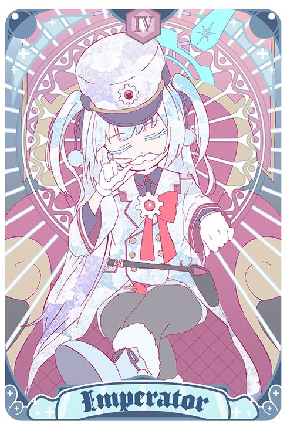

阿慈谷日步美(阿慈谷ヒフミ)：
三一補課部的部長，一名感情豐富的少女，外貌和成績都不出眾，但為人圓滑且品性善良，很受人歡迎。
在對策委員會和伊甸條約兩篇章都有關鍵戲份，甚至有專屬BGM《Hifumi Daisuki》，人稱「超級普通人」
久田伊樹菜(久田イズナ)：
百鬼夜行聯合學園所屬，忍術研究部的少女。
雖然是個性格開朗且充滿活力的少女，因為追求他人無法理解的夢想，至今為止都是一個人孤獨的成長。
那個夢想就是「成為奇普托斯最強的忍者」。
為了成為出色的忍者，今天也過著一邊稱老師為「主公！」一邊進行護衛(也可以單純說是跟著老師)的生活。
和樂知世(和楽くチセ)：
百鬼夜行聯合學園所屬，陰陽部的天然電波系少女。
因為極其喜愛俳句之類的傳統文化而加入了陰陽部。
由於外貌和舉止充滿著獨特的神秘氣息，因而成為百鬼夜行學生們羨慕的對象，但本人對此幾乎沒有自覺。
桐藤渚(桐藤ナギサ)：
現役主席，聖子派的代表，因聖亞發生事故無法進駐茶會而遞補上位，在三人中最擅長政治權謀方面的操作。
為了維護伊甸園條約的締結使用不少政治謀略，試圖驅逐或隔離可能的攪局者，本人也有自覺做的不是什麼光明事。
過於謹慎的性格導致她對所有人都生有疑心，就連身邊最親近的人也不抱信任

連河潔莉諾(連河チェリノ)：
赤冬聯邦學園所屬，蠻橫又孩子氣的學生會長。
對權力的執著與慾望十分驚人，即使每週都因為革命而失勢，卻能不斷設法回到學生會長的寶座。
貼在鼻子下面的鬍子據潔莉諾所說是「權威的象徵」、以及「所謂的權威就是由鬍子而來的」。
春原旬(春原シュン)：
山海經高級中學所屬，培育支援部「梅花園」的教官。
「梅花園」除了是園的名字之外也是社團的名字。個性善良且為人寬厚，除了梅花園的學生之外，也深得山海經其他學生的信任。
由於擔任教官許久，就算年幼學生惡作劇也不太會生氣。唯獨只要有人提及自己的年紀，就會產生敏感反應。
聖園彌香(聖園ミカ)：
茶會三巨頭之一，聖父派的代表。
直率，天真爛漫，雖然稱不上笨，但缺乏大局觀和政治意識。
相反的擁有極強的個人戰力，有著單手破牆的怪力，實力最少與弦生並列或之上。
砂狼白子(砂狼シロコ)：
阿拜多斯高級中學所屬，換上了騎行用的正式裝束，阿拜多斯對策委員會的突擊隊長。
脫下平常的制服，鼓起幹勁換上騎行服的她，總覺得看起來比平常還要開朗。目標雖然是誇張的「縱貫奇普托斯」，但不知是否因為有著值得信賴的夥伴，本人看來並沒有不安和擔心的樣子。